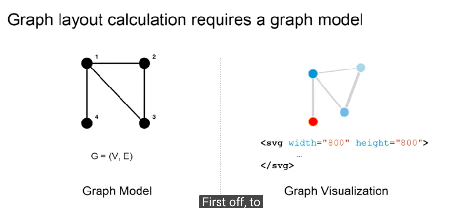
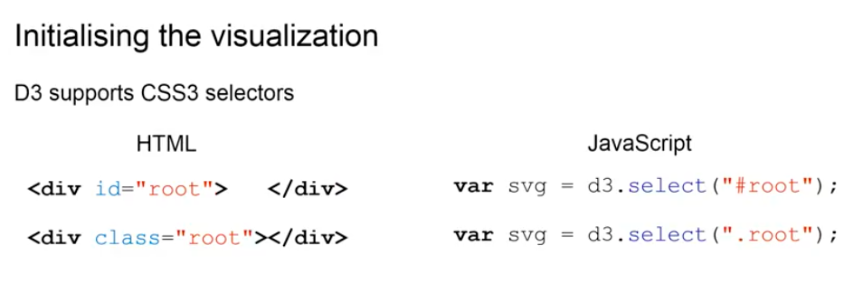

In this part, we'll take a closer look onto data binding with D3 and we will also create a graph model that will then translate into a visualization on our site.
First off, to create a graph visualization we need two parts: we need a mathematical model of a graph that we'll use to calculate aesthetically pleasing positions for the nodes on our graphic and then we will need to translate or mirror these positions to the shapes of our actual visualization. So, this is where the data binding part comes in. We'll bind the node position to the position of the shapes in our graph visualization.
So, to start off, we'll start off with the graph model itself and D3 provides a number of layouts for graphs right out of the box.
We will be using a force directed layout today, which works in a way that there are forces that are interacting between the nodes of a graph. We can think of them as gravity. We will then set a negative value for this gravity, which will cause these nodes to repel each other and ideally they would spread out evenly across the surface of our graphic, but because they are connected by the links that will cause them to create a shape that will still accommodate the links, while being as nicely spread out as possible, which will usually result in a very nice looking graph. For this to happen, we need to set a number of options on our force layout. You can see them down here on the bottom. There are things such as the charge, which is the force, which interacts for the strength of the force between the nodes, the link distance, meaning the default length of connection between nodes, and it will also have to give the whole simulation the size. So, we need to set the dimension of the area in which the nodes can move and we obviously want this to be the same size as our graphic on the screen later on. So, we'll use two variables for width and height, which we'll pass to the size function and we'll also reuse them later for the size of our graphic.
So, one more thing we actually need for our graph model is obviously the data itself and the graph layout provided by D3 has two more functions we can call to actually pass that data.
They are called nodes and links, and we'll pass a set of data that you've already seen before the one about the characters in Game of Thrones and their interactions. In this case, the characters are nodes. In terms of data, it's just an array of names, basically, and the links, which are the interactions between those. Finally, to actually start the simulation, we have to call the start function. The start function will cause D3 to initialize a number of things internally and we will kind of come back to that in a later slide.
So, now, that we have the data model for our graph layout initialized, we'll move on to actually initialize the visualization and then we'll try to bind the model and the position of the nodes to the graphics and the position of the shapes on that graphic.

So first thing first, what we need to do to initialize the visualization is we now have to use D3 to manipulate our DOM.
In this case, we would like to set or select the root div that we have created in our template, if you remember, and then we would like to use D3 to append a child element to this root div, in this case a SVG element. And now we need to talk about something else as well, because the way that D3 actually selects elements from the DOM is by using CSS selectors and we'll talk about CSS a little bit later, but generally if you want to learn more about CSS, there are great resources online for that as well. We'll only go to the basics for now. So, basically, in CSS, you have different ways of selecting different types of DOM elements. There are three, actually. We'll only use two for now. You can select an element by its ID and to do that, you use a pound or hash tag in front of the ID, so if you look at the top row here, if I want to select the HTML element with the ID root, I can use the JavaScript function on the right ,which is provided by D3. I can say D3.select("#root") and that means that the SVG, one on the left, will actually hold the ID equals root element on the left. Similarly, I can also use the full-stop. In this case, this will select any element that has the class root attached to it. So, in this case, instead of selected by ID, I'm selecting by CSS class and we talk a little bit more about that later as well. But for now, if you see #root that just means I want to select the DOM element, which has the ID root.
So, this is what we're actually going to do now.
We'll take D3, we'll select the root ID from our HTML file and then we'll tell it - now that you have it, please append a child element of the type SVG, which we'll do using the append function and then we'll also set a number of attributes on this SVG. In this case, we'll set the dimensions. And, as I mentioned before, these dimensions need to be the same as the ones of our actual mathematical simulation of the node positions. So, we will reuse the width and height variables that we set before. And if you actually execute this, we get what you wanted.
We created a new DOM element, in this case, this SVG element as a child element of our root div with the correct dimensions.
The next thing we need to do is we need to populate this SVG elements with shapes corresponding to our graph model. So, let's take a look at this slide.
On the left you can see some demo data. Think of the top ones as characters from the books. In this case, they're just called A, B and C. And the bottom on the left, will have a number of connections between those and now, remember, when we call the start function on our layout, I told you that a number of initializations happen, this is what you see on the bottom, on the links data points, that the links actually connect numbers and not necessarily the names like the A, B, and C on top. This is because as soon as you initialize the layout in D3, D3 will replace all the names with the indices. That means that all the names will be replaced by the position of this name in the name array and, obviously, that is a way to handle cases where, for example, in our case, two characters might have the same name and to distinguish them, instead of calling them A and B, we'll call them name 0 and name 1.
If we now try to add this data to our visualization, we would like to see something like we see on the right. So, we would like to create a child element for SVG. One circle element for each node and one line element for each link, and we would also like to attach a class to them, so we can label them as links and nodes, because you could possibly imagine that there are other circle or line shapes on our graphic that do not necessarily represent a node or link of the graph. But what we're actually trying to do here in terms of data binding is, we would like to represent the data we have on the left in the same fashion in our UI or in our graphic, and we'd like to keep those consistent as well. Data binding in this case refers to the consistency that if we remove a node, for example, and the data on the left, this should also be represented in our graphic on the right and if, for example, the user could remove nodes on the graph in our graphic, we would then like to relay this information back to our data and keep it consistent.
Now let's take a look how we can use D3 to add new elements to our graphic.
Potentially you could think that we could use the same technique that we used to create the SVG element before to also create the shapes on the SVG itself. So, we could possibly select the SVG and append a line element by hand. That would of course mean that we have to repeat this process for every line and for every circle element that we would like to add. But instead, D3 provides a smarter way to do it. D3 is a lot about selections and sets of elements and how to join them together. So, when we try to add elements to the SVG using D3, we will actually try to select all the child elements of SVG that have the class link. And, as you can see on the right, there are none at the moment. So, this selection will actually return an empty set on an empty array of elements.
We can now pass our data to this selection using the data function of D3.
So, this basically passes all three links or three data points to the selection and compares them, and we now have two sets of elements. We have the empty set of elements in the SVG and we have a set of three data points in our data. Now, we would like to combine those together, so that for each data point we also have an element on our graphic.
So, again, the links on the left side - three data points we would like to now represent those on the right on our graphic as well. If you think in terms of sets, this is only one of three possible outcomes. You could, for example, also imagine that we have elements on our data, I'm sorry, on our graphic on the right, but not in our data or you could imagine that we already have the same elements on both, the right side and the left.
So, these are actually the three outcomes that you could have when comparing two sets: on the left in yellow, you have the set of data points and on the right you have the set of elements on our page. And D3 provides a function for each of the three cases that can happen if we combine or compare these two sets. If we want to deal with all the data points that are not yet on the screen, we can use the enter function. If you want to deal with all the elements on the webpage that do not have any representation in our data, for example, because we move that data programmatically, we use the access function and if you want to just deal with all the data points that are already in data and our elements, but, for example, have been updated in the data or the website, we use the update function.
To have it again in text: we use the enter function of D3 to deal with every data point that does not have a corresponding DOM element yet, and we can use this to add new elements to our SVG. On the other hand, the exit function does the exact opposite, if you want. If we call the exit function, it will return us every element that is on the site, but does not have a corresponding data point. This is mainly used to remove elements from the webpage that are not in the data anymore. And then, if we have a number of elements that are in the data and on the site as well, we use the update function, for example, to update any attributes that might have changed.
So, if we actually do this, you can see, we get the desired outcome on the right.
So, let's go through it again,
Now, we would also like to do the same thing with the nodes. In this case, for circular elements, but we will skip this for now. You can take a look at our accompanying video where we demonstrate how to actually do this in code. Now, that we actually created a graph model and we created a graph visualization using SVG, we'll take a bit of a closer look into how to control the look of this SVG using CSS and style elements in the next lecture.